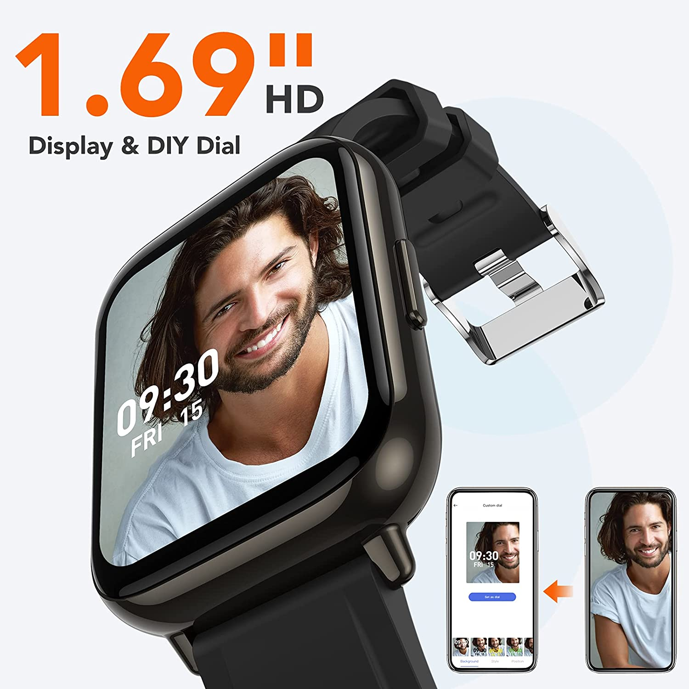
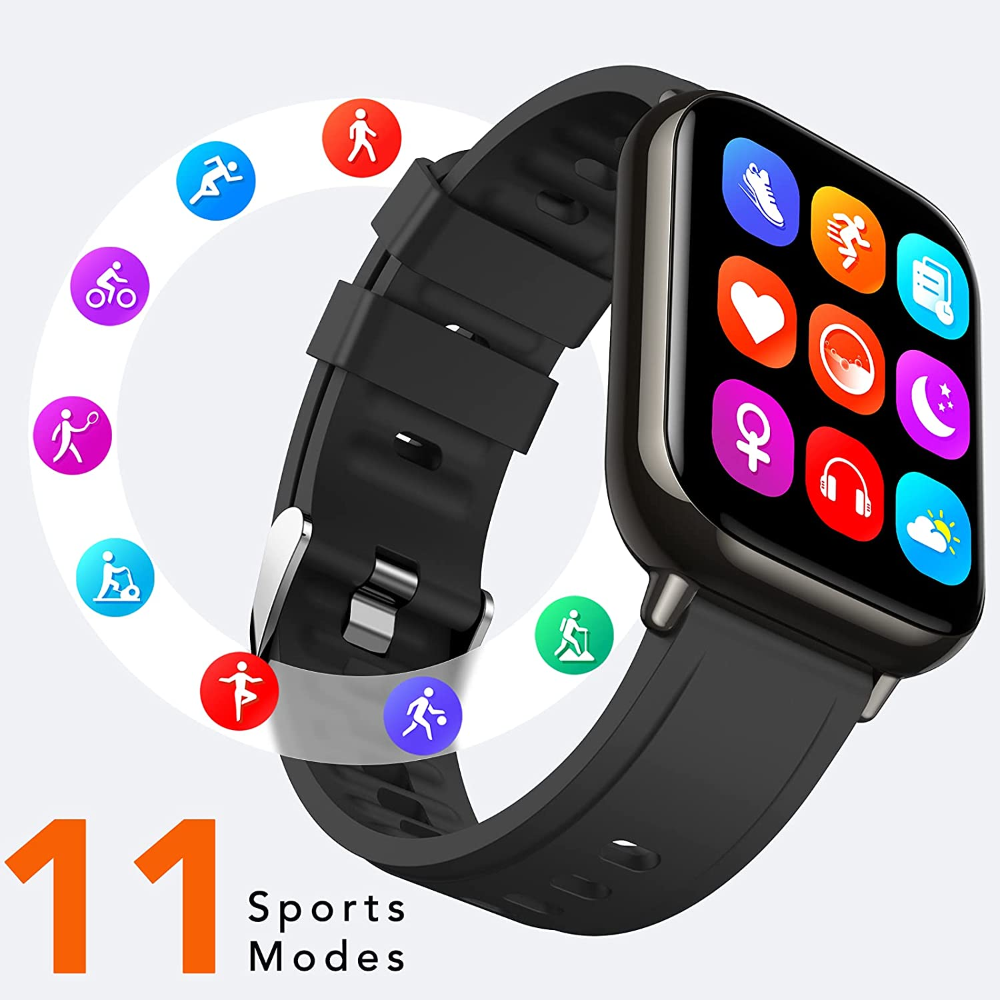
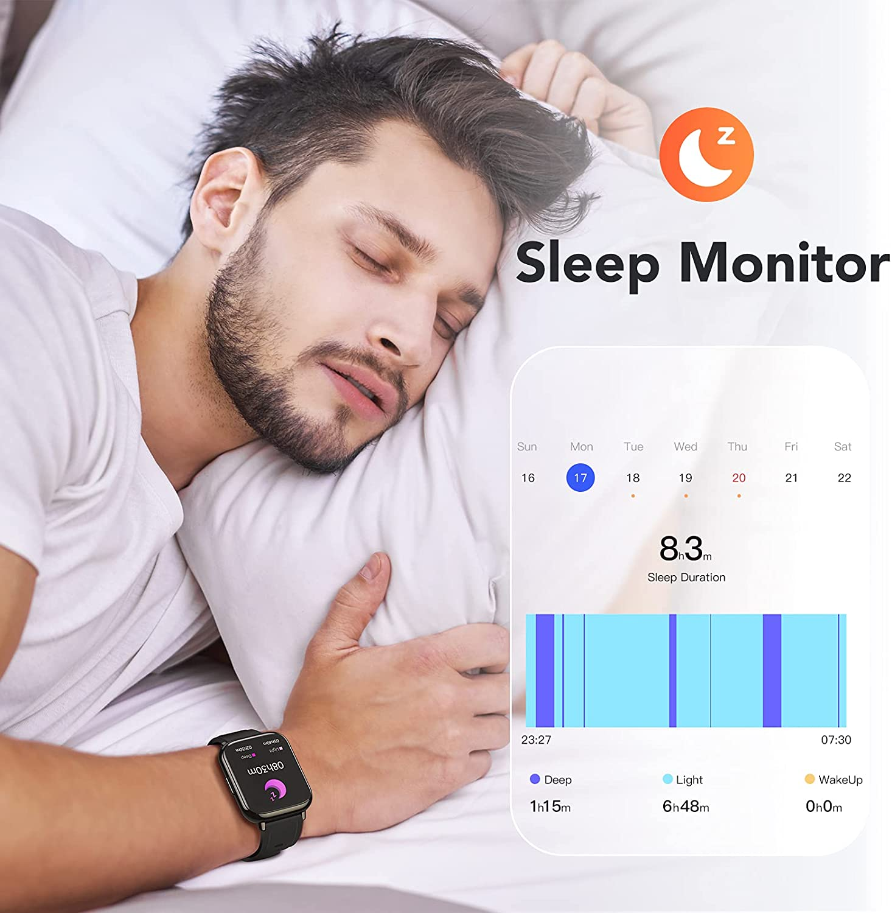
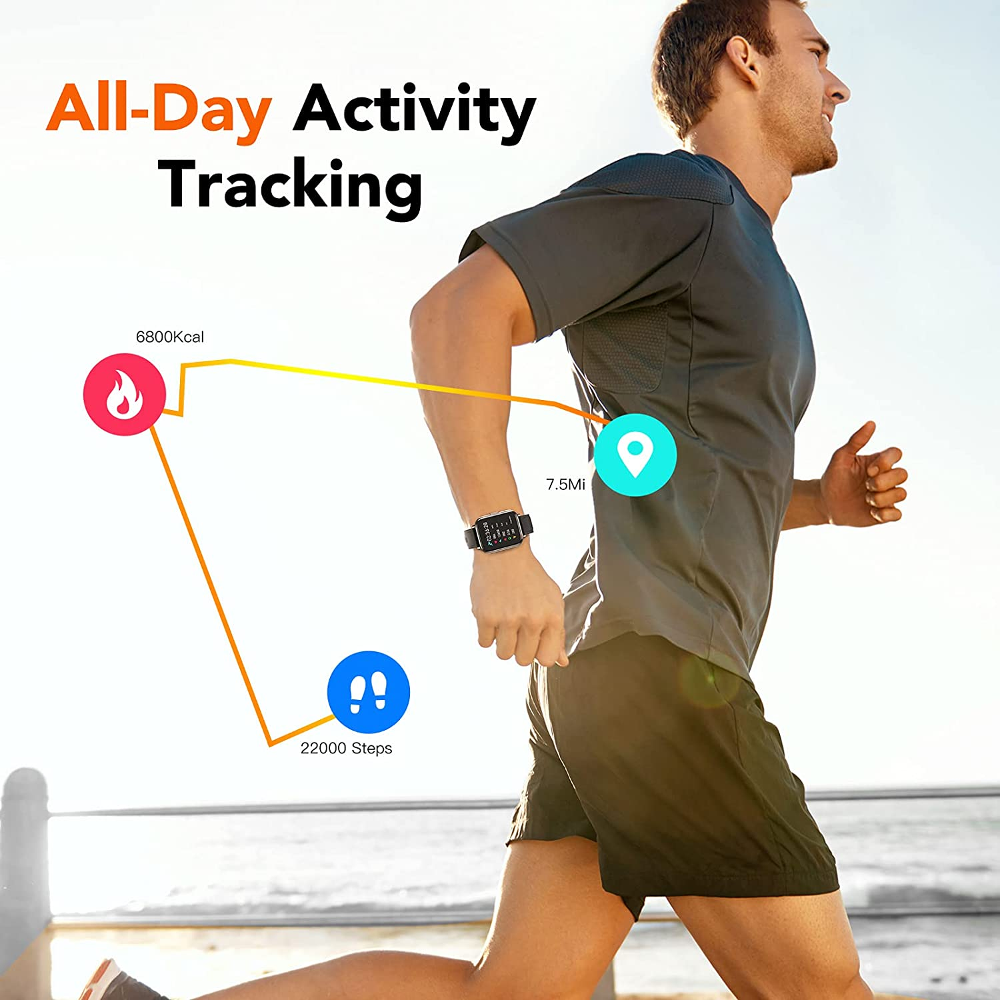
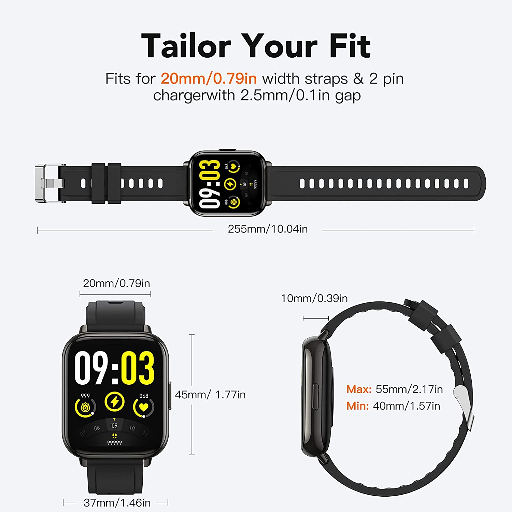
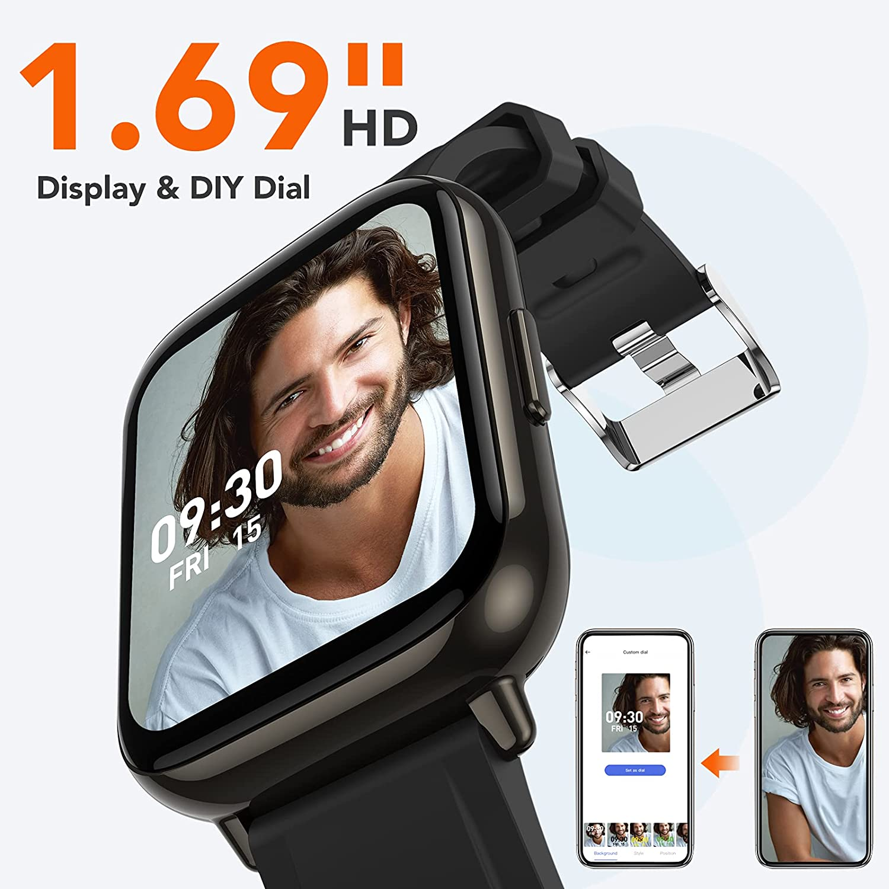
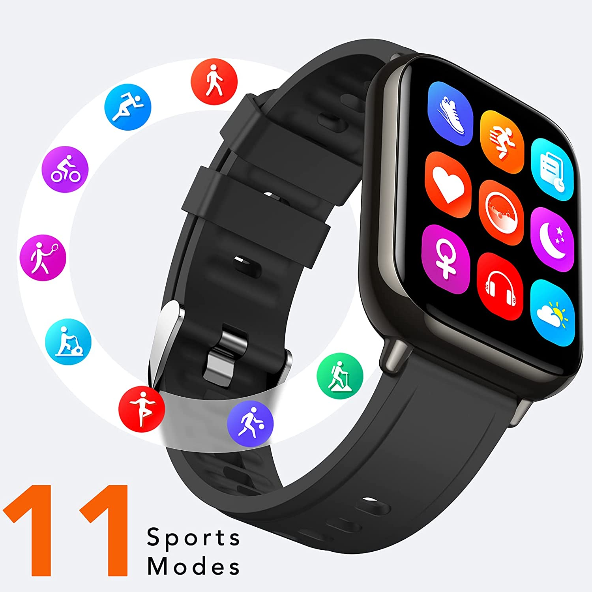
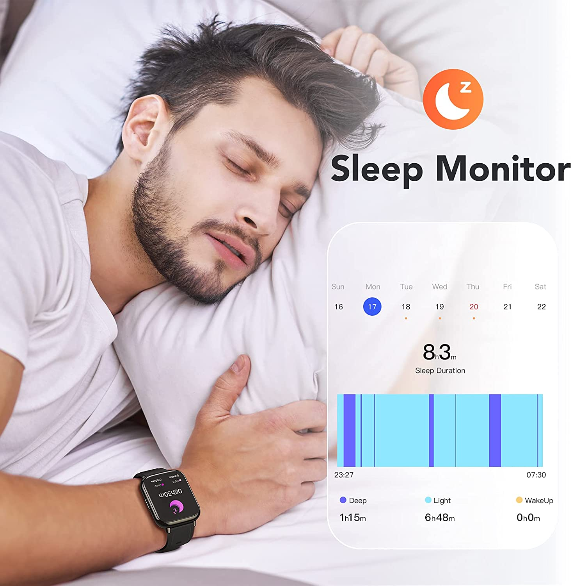
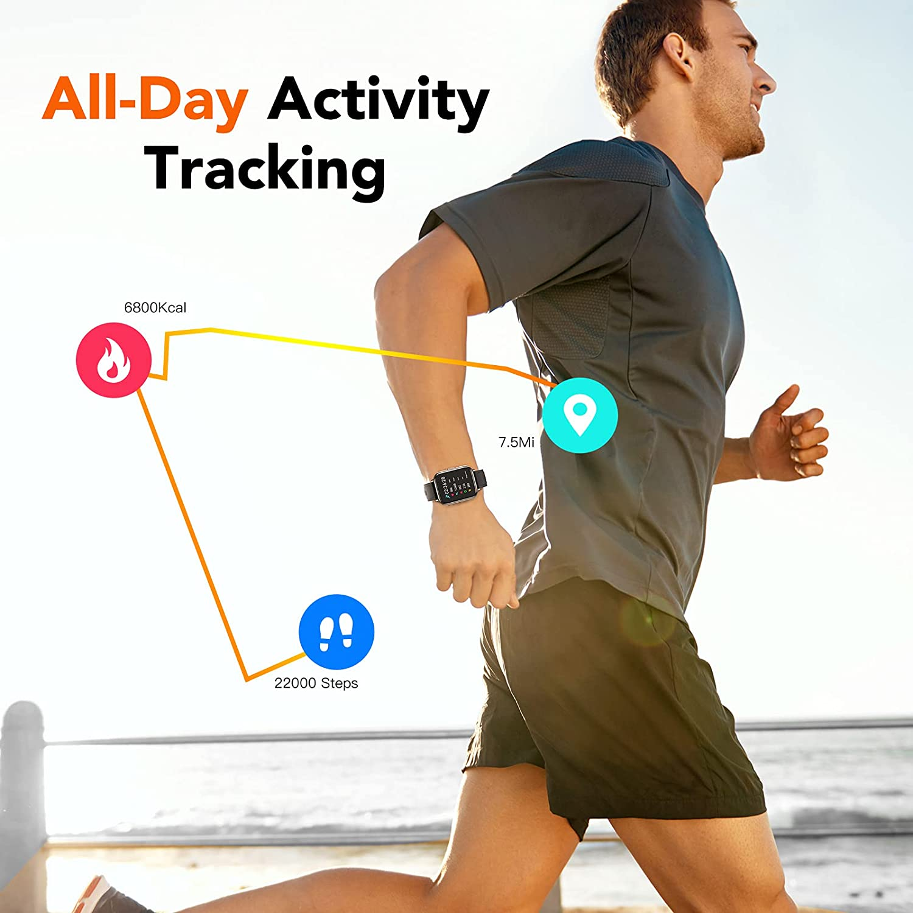
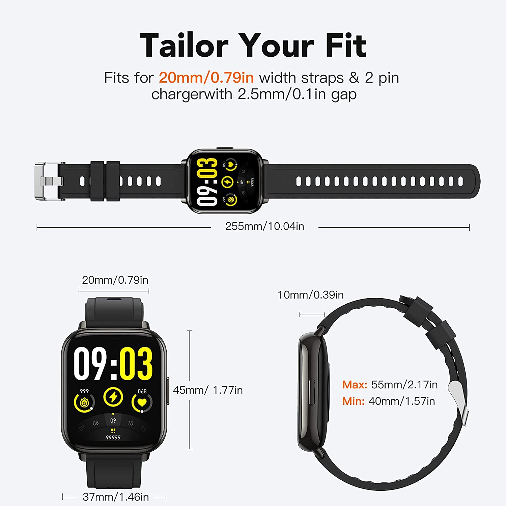

ساعة ذكية بشاشة
 









ساعة ذكية بشاشة 1.69 انش (43 ملم) لهواتف اندرويد واي او اس، ساعة مقاومة للماء بدرجة IP68 لتتبع معدل اللياقة البدنية ومراقبة معدل ضربات القلب وعد الخطوات ومراقبة النوم للرجال والنساء من اجبتيك، اسود
حول هذه السلعة
-
شاشة مذهلة بجودة وضوح عالية مقاس 1.69 انش: شاهد بياناتك بألوان مذهلة وتمتع بدقة وضوح عالية وأفق متسع بفضل الشاشة غير المسبوقة مقاس 1.69 انش التي تتسم بجودة وضوح عالية مع إمكانيات لمس كاملة. اختر من بين واجهات الساعة الحالية الموجودة بالفعل أو قم بتنزيل واجهة جديدة من التطبيق حسب ما يتوافق مع حالتك المزاجية ومناسباتك، ستساعدك على عدم تفويت أي شيء مهم.
- نظام متكامل وشامل لإدارة الصحة: تتابع أنشطتك اليومية، مثل عدد الخطوات والمسافة المقطوعة والسعرات الحرارية المحروقة، كما وتتبَّع نومك طوال الليل وتوفر لك فهم أعمق بشأن صحتك. فضلًا عن رسائل التذكير بشأن قلة الحركة والوظائف الصحية الأخرى. تساعدك هذه الساعة على تحقيق إدارة كاملة لصحتك من معصمك. اتخذ خطوة أخرى نحو تحسين صحتك.
- تُعزِّز شغفك بالرياضة: مزودة بـ 11 وضعًا رياضيًا (مثل رياضة الركض وركوب الدراجة واليوغا والسباحة وما إلى ذلك)، اختر أكثر ما تحب، وارتقي بمستوى لياقتك البدنية إلى مستوى جديد تمامًا. ومن ناحية أخرى، تتميز بمقاومتها للماء بدرجة IP68 حسب تصنيف قوة تحمل الماء والغبار لمقاومة الرذاذ والماء والغبار، لذا لا داعي للقلق بشأن رذاذ الماء أو المطر المفاجئ.
- تُبقِيك على اطلاع تام بآخر المستجدات: ما عليك سوى النظر إلى معصمك لقراءة جميع مكالماتك الواردة والرسائل النصية ورسائل خدمات الشبكة الاجتماعية (مثل فيس بوك وتويتر ويوتيوب وانستجرام وغيرها) التي تُرسَل إلى شاشة الساعة الذكية، وابقَ على اتصال مع العالم من حولك. لن تحتاج إلى إخراج هاتفك من جيبك. ملاحظة: يدعم تطبيق "اون وير" إصدار اي او اس 10.0 / اندرويد 5.0 فما فوق وبلوتوث 5.
- افعل الكثير واستكشف المزيد: تم تصميم ساعتنا الذكية لمساعدتك على إدارة يومك بطريقة ممتعة فهي مزودة ببطارية تعمل حتى 10 أيام عند شحنها مرة واحدة لمدة ساعتين. توفر الكثير من الخصائص، مثل التنبؤ بالطقس وساعة المنبه وساعة الإيقاف والمؤقت وإمكانية التحكم في الموسيقى والتحكم في الكاميرا وغيرها الكثير مما يمنحك أقصى قدر من الراحة.
to buy click here
back